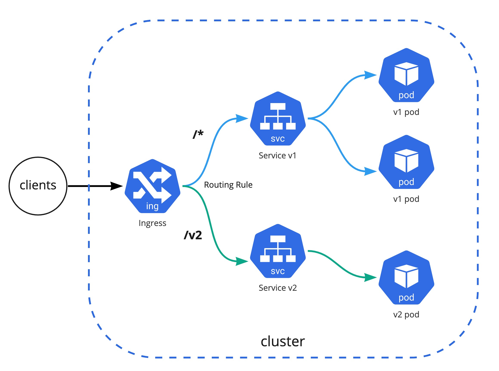

핸즈온 2.3 Service & Ingress
Ingress-nginx 구성 및 Ingress를 통해 Service 접근 실습
로컬 쿠버네티스 환경에서 ingress-nginx controller를 구성하고 Ingress를 통해 여러 개의 서비스에 어떻게 접근을 할 수 있는지 알아보는 실습
사전 준비 사항
Kind Kubernetes Cluster 구성: 실습 링크
Helm의 이해: 관련 링크
Helm 설치 및 애플리케이션 배포 방법: 실습 링크
Architecture
하나의 Ingress에 여러 버전의 Backends를 구성하고 URL Path를 기준으로 트레픽을 라우팅

/v2를 제외한 모든 path(/*)는 첫 번째 버전의 워크로드로 전달, /v2만 두 번째 버전의 워크로드로 전달
1 Ingress Nginx 구성
쿠버네티스 자체는 클라우드에 종속적이지 않는 애그노스틱한 도구이기 때문에 다양한 Ingress Controller가 있으며 대표적으로 오픈소스 ingress 중에서는 Ingress-Nginx가 유명하며 쿠버네티스 공식적으로 지원을 하는 컨트롤러 이다
1.1 Helm Value 설정
Helm을 통해서 설치하기 위해 기존 ingress nginx의 helm value 값을 다음과 같이 설정
controller:
replicaCount: 1
nodeSelector:
ingress-ready: "true"
tolerations:
- effect: NoSchedule
key: node-role.kubernetes.io/master
operator: Equal
- effect: NoSchedule
key: node-role.kubernetes.io/control-plane
operator: Equal
watchIngressWithoutClass: true
hostPort:
enabled: true
service:
type: NodePort
Info
로컬 Kind 클러스터는 extraPortMappings이 kind 컨테이너의 hostport 80, 443으로 매핑이 되기 때문에 hostPort로 Ingress Controller를 활성화해주어야 한다.
1.2 Ingress-Nginx 컴포넌트 설치
helm upgrade --install ingress-nginx ingress-nginx \
--repo https://kubernetes.github.io/ingress-nginx \
--namespace ingress-nginx --create-namespace -f ingress-nginx-values.yaml
정상적으로 배포가 완료 되었다면 IngressClass는 nginx로 구성이 되며 다음과 같이 확인 가능하다
kubectl get ingressclasses.networking.k8s.io
NAME CONTROLLER PARAMETERS AGE
nginx k8s.io/ingress-nginx <none> 5m
2 데모 애플리케이션 배포
데모 Stateless 애플리케이션 v1과 v2를 demo 네임스페이스에 배포하고 서비스 및 인그레스까지 연동하여 접근 확인을 해 본다
데모용 네임스페이스 생성
kubectl create ns demo
2.1 데모앱 v1 배포
애플리케이션 v1 배포 및 모든 URL Path가 v1 애플리케이션으로 포워딩 되도록 Ingress 설정
kubectl create deployment demo01 \
--image=cloudacode/hello-go-app:v1.0.0 --port=8080 -n demo
kubectl expose deployment demo01 --port=80 --target-port=8080 -n demo
kubectl create ingress demo01 --class=nginx --rule="/*=demo01:80" -n demo
혹은 선언형(Declarative) 예시 ingress-service-demo-app.yaml
Info
위의 helm value 값에서 watchIngressWithoutClass: true 옵션을 주었기 때문에 따로 class 옵션을 주지 않아도 자동으로 nginx ingress를 사용하게 된다.
$ kubectl get ing
NAME CLASS HOSTS ADDRESS PORTS AGE
demo01 nginx * 10.96.119.252 80 112s
2.2 데모앱 v2 배포
애플리케이션 v2 배포 및 /v2 URL Path가 v2 애플리케이션으로 포워딩 되도록 Ingress 설정
kubectl create deployment demo02 \
--image=cloudacode/hello-go-app:v2.0.0 --port=8080 -n demo
kubectl expose deployment demo02 --port=80 --target-port=8080 -n demo
kubectl create ingress demo02 --class=nginx --rule="/v2=demo02:80" -n demo
혹은 선언형(Declarative) 예시 ingress-service-demo-app.yaml
Tip
만약 애플리케이션 url이 /로 동작하는 경우는
--annotation="nginx.ingress.kubernetes.io/rewrite-target=/
을 추가 해준다
3. 접근 확인
가장 먼저 애플리케이션의 워크로드가 정상적으로 기동 중인지 확인
kubectl get pods -n demo
NAME READY STATUS RESTARTS AGE
demo01-5dff6fb4d4-b4rch 1/1 Running 0 2m
demo02-d57799f78-phs4r 1/1 Running 0 1m
kubectl get svc -n demo
NAME TYPE CLUSTER-IP EXTERNAL-IP PORT(S) AGE
demo01 ClusterIP 10.96.144.58 <none> 80/TCP 7m
demo02 ClusterIP 10.96.69.13 <none> 80/TCP 5m
위에서 구성한 Ingress 설정 동작 확인: /v2를 제외한 모든 path는 첫 번째 demo01 워크로드로 전달되며 /v2만 demo02 워크로드로 전달
curl 127.0.0.1
Hello, world!
Version: 1.0.0
Hostname: demo01-5dff6fb4d4-b4rch
curl 127.0.0.1/v2
Hello, world!
Version: 2.0.0
Hostname: demo02-d57799f78-phs4r
4 Clean Up
실습 완료 후 kind cluster 삭제
kind delete cluster